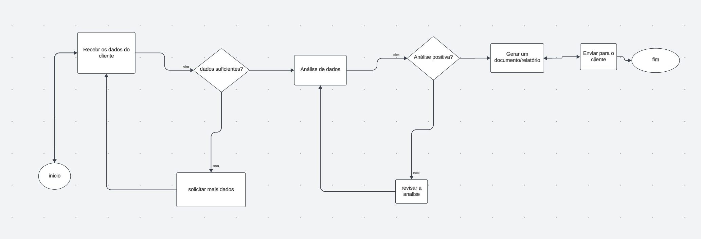
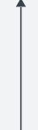
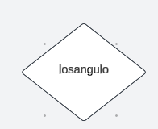
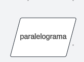
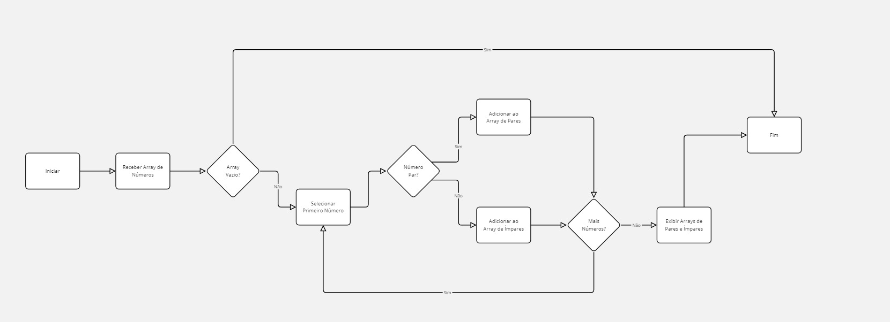
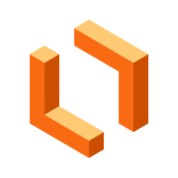

Um fluxograma é uma representação visual dos processos de uma empresa, mostrando como as tarefas ou atividades se conectam e fluem de uma etapa para outra. Ele utiliza símbolos, como retângulos para representar ações ou decisões, e setas para indicar a sequência das operações. Dessa forma, o fluxograma ajuda a entender as funções da empresa de maneira clara e estruturada, facilitando a comunicação e o aprimoramento dos processos.
Representa o início ou o fim de um processo.
Representa uma ação ou processo. Indica uma tarefa que precisa ser realizada
Indicam o fluxo ou a sequência das atividades, mostrando a direção do processo
Representa uma decisão. Indica um ponto onde é necessário tomar uma decisão, geralmente com alternativas (sim/não).
Representa uma entrada ou saída de dados, como em formulários ou sistemas.
Este fluxograma exemplifica um array que separa os numeros em arrays de numeros impares e arrays de numeros pares
O Lucidchart é uma ferramenta de design e colaboração online usada para criar diagramas, fluxogramas, organogramas, mapas mentais e outros tipos de representações visuais de informações. Ele é amplamente utilizado por equipes e indivíduos em diversas áreas
